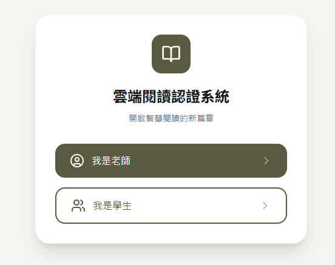
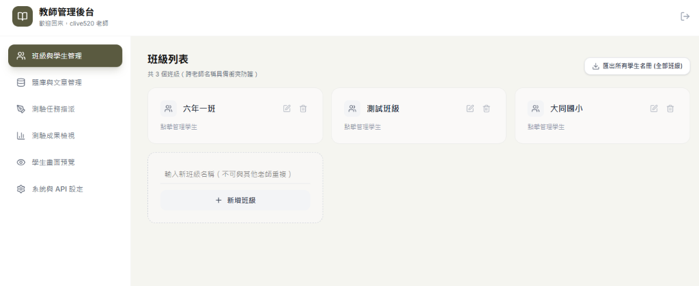
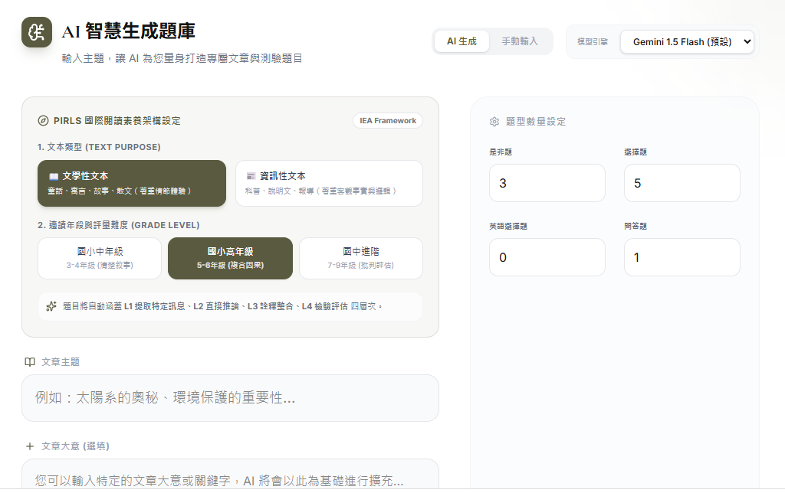
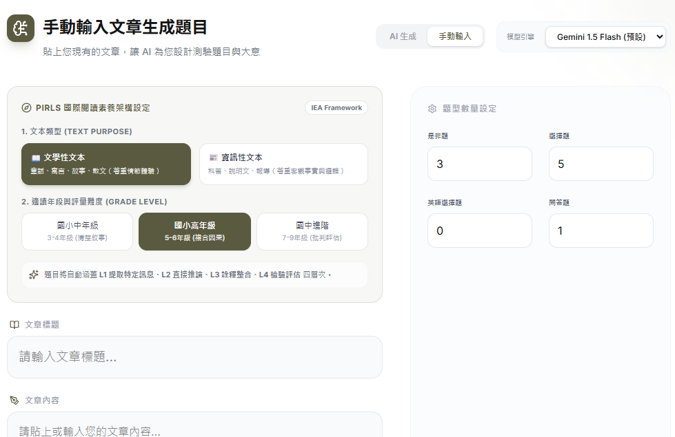
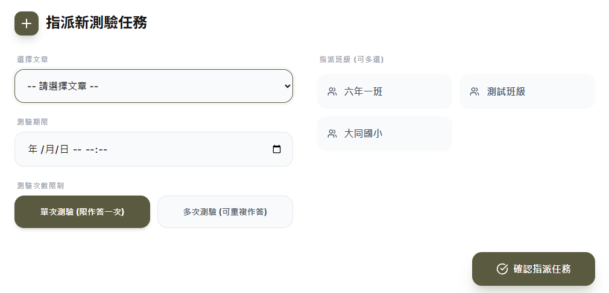
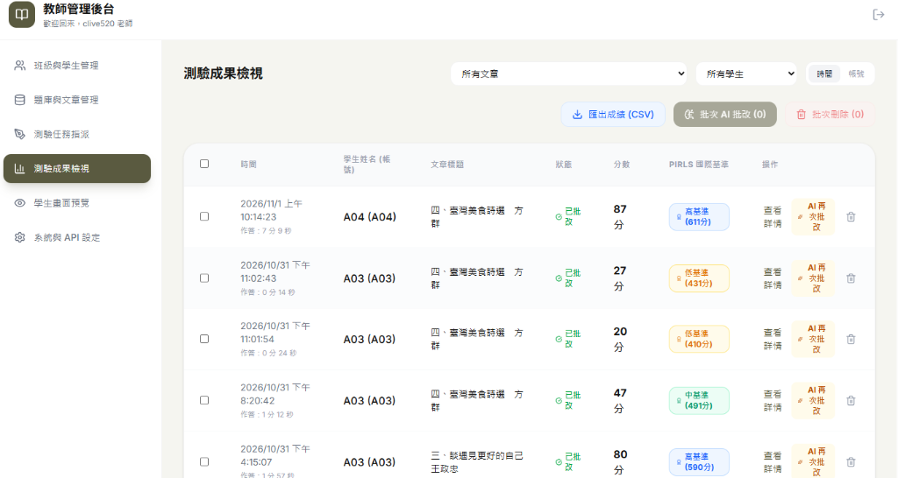
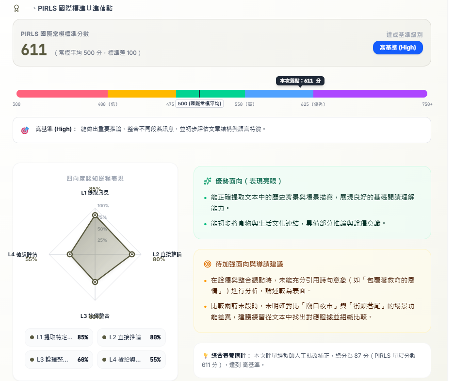
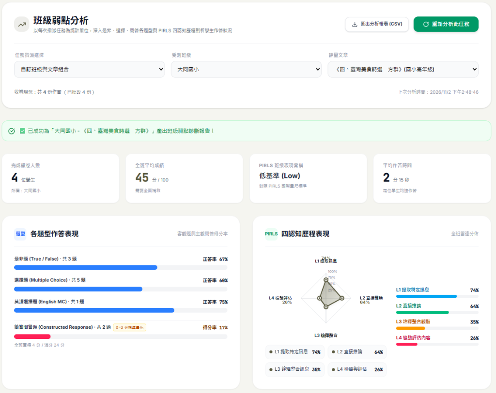
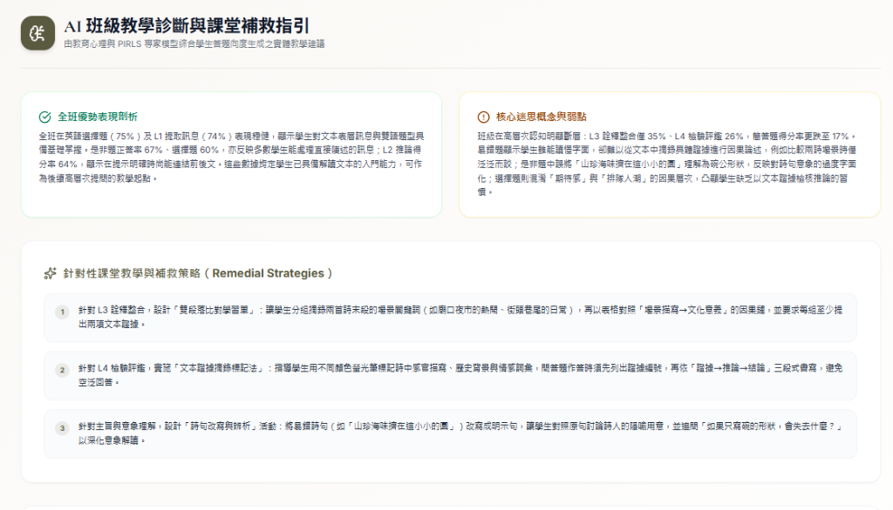
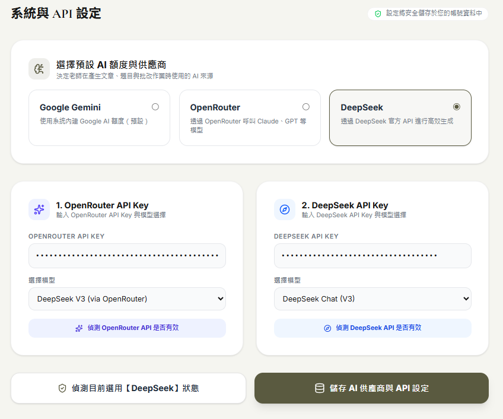

AI 賦能閱讀理解 PIRLS 提問 × 智慧批改實踐
把繁重出題批改交給 AI，把深度思維對話還給課堂

研習六大模組規劃
現場痛點分析
傳統閱讀教學的三大難題
PIRLS 四層次思維
從訊息提取到批判評估
雲端閱讀認證系統
師生雙端實作介面展示
Google AI Studio 出題
結構化提示詞與批改標準
課堂三階段落地
課前自學、課中對話、課後扶助
現場體驗與實作
教師動手體驗與 Q&A
國小閱讀教學的三大現場痛點
評量指北針：PIRLS 閱讀理解四層次 (四象限)
提取特定訊息
在文章中搜尋並找出直接清楚陳述的事實、人物、時間與地點。
推論與延伸
連結前後文句，推敲字面未直接明說的因果關係、角色動機或心境轉折。
詮釋與整合
貫穿整篇文章，統整不同段落訊息，理解作者的寫作意圖、核心價值或隱喻。
檢驗與評估
跳脫文本視角，省思作者觀點與寫作手法，並結合生活經驗提出批判與評價。
思維轉變：人機協同的新教學模式
- • 老師包辦出題，容易偏頗重事實
- • 批改耗費 3~5 天，回饋嚴重滯後
- • 只打勾打叉，缺乏具體引導話語
- • AI 智慧出題：依 PIRLS 4 維度瞬間出題
- • AI 秒級診斷：即時鷹架提示與給分
- • 數據化報表：全班弱點掌握一目了然
實踐成果：雲端閱讀認證系統

出題雙軌模式：AI 原創撰文 × 自行提供文章
AI 撰寫文章出題

- 💡 免找文章：只需輸入主題關鍵字（如：環保、宇宙）
- 📝 量身撰寫：AI 自動生出符合年段與字數的原創文章
- 🎯 秒級出題：同步產出涵蓋 PIRLS 四層次的完整考題
自行提供文章出題

- 📋 直接貼文：貼上現行國語課文、校訂文本或剪報時事
- 🔍 深度研讀：AI 自動掌握全文結構、脈絡與核心意旨
- ⚡ 客製配置：自由設定是非、選擇、問答題數與難易度
隨時彈性指派任務：單次 / 多次 × 期限管理

• 單次測驗（限答一次）：正式閱讀學力評量、檢測真實能力
• 多次測驗（重複作答）：自主精熟學習，依 AI 引導即時修正
• 支援年月日與精確時分設定，截止後自動關閉
• 培養國小學童閱讀自我管理與規律學習習慣
• 勾選「六年一班」、「大同國小」等不同班別
• 科任教師、導師或學年共備，一鍵完成派卷
後台自行批改：2-5 分鐘極速回饋 × PIRLS 國際基準

學生送出後 AI 立即自動批閱，在記憶猶新時獲得回饋與修正指引。
告別傳統 3-5 天批改延遲自動換算並標註「高基準 (600+)」、「中基準 (475+)」、「低基準 (400+)」。
精準定位閱讀學力落點精確記錄作答時間（7分鐘認真思索 vs 14秒亂猜），一眼看穿學習投入度。
輔導弱勢與態度把關支援「AI 再次批改」與查看詳情，教師握有把關權；一鍵匯出 CSV 班級成績冊。
人機協作最佳實踐AI 智慧初評 × 教師二次審閱（人機雙重把關）
0分(離題空白) / 1分(單一線索) / 2分(因果完整) / 3分(深刻扣題)，量化標竿擺脫主觀憑感覺。
客觀量化評閱標竿自動精準辨析學生答案中的歷史事實與修辭隱喻，秒級產出溫柔診斷與補正說明草稿。
省下 80% 批改心力老師隨時一鍵點選「✓ 2 分」進行微調，或補充個別化評語；決定權與教育溫度永遠在老師手中。
教師保有最高裁量權個人素養診斷報告：PIRLS 國際常模基準 × 四向度雷達圖

自動換算常模分數（如：611 分 • 高基準 High），清晰彩帶標尺一眼掌握學力水準。
對標國際權威標準L1 提取 85% / L2 推論 80% / L3 詮釋 60% / L4 批判 55%，清楚看見「字面強、高階需鷹架」盲點。
思維強弱向度立現自動生成「表現亮眼優勢」與「待加強引導建議」，成為個別化輔導與親師座談的最佳利器。
親師溝通專業有據班級弱點巨觀診斷：題型斷層 × PIRLS 歷程剖析

選擇題達 68%，但簡答問答題得分率僅 17%（全班僅得 4/24 分）！精準抓出學生文字表達與論述瓶頸。
主觀題組織力嚴重不足基礎思維 L1(74%)、L2(64%) 尚稱穩定，但高階思維 L3 詮釋(35%)、L4 評估(26%) 懸崖式下跌！
高階批判思維亟需鷹架全班平均 45 分，落於低基準 (Low)；平均作答僅 2 分 15 秒，反映學生閱讀過於倉促，需引導深度精讀。
作答過快 • 需全面補救告別瞎子摸象！次週國語課立刻對症下藥，聚焦「L3/L4 篇章深意與理由陳述」；一鍵匯出 CSV 報表共備討論。
以評促教 • 差異化扶助針對性課堂補救策略：AI 專家模型生成的實體教案

分組摘錄兩首詩末段場景（廟口 vs 街巷），以表格梳理「場景描寫 ➔ 文化意義」因果鏈，嚴格要求列出雙項文本證據。
架設詮釋因果鏈以多色螢光筆標記感官、歷史與情感詞，問答題依「證據 ➔ 推論 ➔ 結論」三段式書寫，徹底根除空泛無據回答。
告別憑空猜想將「山珍海味擠在這小小的圓」改寫為白話明示句，引導討論詩人隱喻：「若只寫碗的形狀，會失去什麼？」深化詩意解讀。
解構修辭與隱喻理想很豐滿、現實很骨感：AI 成本與穩定度的務實解方

免費 AI 常面臨額度上限（Rate Limit）與反應過慢問題，全班同時繳卷極易塞車斷線。
尖峰塞車 • 額度不足痛點批改全班 30 份作業花費不到幾毛錢台幣！秒級極速反應，解決學校長期經費考量。
超平價 • 秒級反應 • 性價比之王一鍵調用 Claude 3.5、GPT-4o、DeepSeek 等多元模型，不被單一廠商技術綁定。
多元生態 • 隨時無縫切換內建 Google AI 額度零門檻即開即用；自備金鑰安全加密，學校教學長久穩定運作。
零門檻起步 • 彈性永續大綱審閱與後續章節規劃
確認前導架構
- • 痛點喚醒切入
- • PIRLS 四層次象限
- • 雙軌出題、派卷、自動批改
- • 規準調分、診斷雷達圖
- • 弱點分析、課堂補救、成本解方
後續章節擴充
- • AI Studio 提示詞配方
- • 學生作答 AI 即時回饋範例
- • 課堂 3 階段教學活動設計
部署與現場演講
- • 搭配獨立逐字稿網頁
- • 一鍵推送到 GitHub Pages
- • 隨時隨地開啟投影演講